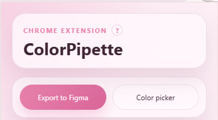
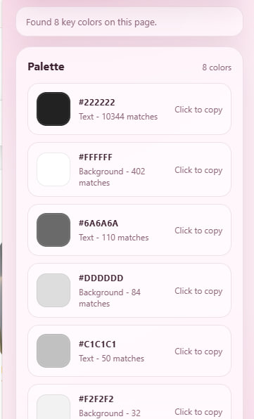
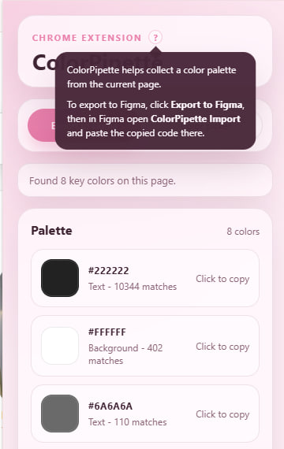
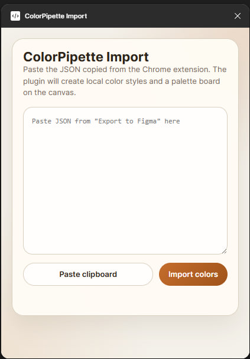

ColorPipette/Background/1
Palette / Boutique editorial
Chrome Extension + Figma Plugin
Turn any website into a reusable color system.
ColorPipette scans page colors automatically, lets you pick exact tones from the interface, and sends the palette into Figma so inspiration becomes usable styles in seconds.
- Automatic page palette detection
- On-page color picker
- JSON export for Figma import
Extension
Auto scan
Palette from a live page
Figma Plugin
Local styles
Imported as styles
ColorPipette/Text/2
Role: Text
ColorPipette/Border/3
Role: Border
Why it feels useful
From inspiration to implementation without losing the mood.
Automatic palette scan
Open the popup and the current page is analyzed immediately. No extra clicks just to get the main visual rhythm of the site.
Precise color picker
Need the exact tone of a button, border, label or card background? Pick a visible element and copy the color instantly.
Figma-ready export
The extension copies a structured palette payload, and the plugin turns it into styles and a clean palette board inside your file.
Product Screens
Real extension screenshots placed inside device-inspired frames.




Workflow
A compact loop for designers who collect colors from the wild.
Open any website
Use the extension popup to capture the dominant palette from the current page automatically.
Export palette JSON
One click copies a structured palette package that keeps color names, roles and page metadata.
Import in Figma
The plugin creates local color styles and a visual board so the palette is reusable immediately.
Figma Integration
The plugin turns copied colors into something your file can actually use.
Before
Loose inspiration
Screenshot folders, copied hex codes in notes, random swatches, and no easy way to keep context about where the palette came from.
After
Reusable color styles
Named styles, source metadata, grouped color roles, and a palette board that can live next to your moodboard or design system work.
Download + Install
A working download link and a clear setup guide for manual installation.
Get the extension package
Download the prepared extension archive and install it in Opera or Chrome using Developer Mode.
Download the import plugin
Get the ColorPipette Import plugin files for Figma and load them through Figma's plugin development tools.
How to install and export to Figma
- Download the extension files from the button above and extract the archive.
- Open the extensions page in Opera or Chrome and enable Developer Mode.
- Click Load unpacked and select the extracted ColorPipette folder.
- Open any website and launch the ColorPipette popup to scan the page palette.
- Click Export to Figma to copy the generated color payload.
- Extract the Figma plugin archive and in Figma choose Plugins > Development > Import plugin from manifest.
- Select the plugin manifest.json, open ColorPipette Import, and paste the copied code there.
Contact
Questions, feedback, or collaboration requests can go directly to the developer.
Developer Contact
lizashushpan@gmail.com
Write to the ColorPipette team
For feedback, collaboration, academic presentation questions, or product support, use the contact link below.